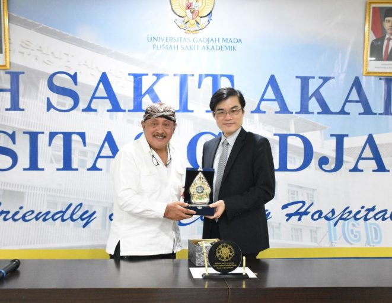

🌐 Hubungan Kerjasama Indonesia dan Taiwan dengan SDGs 3 🤜🤛
DKH Hospitals Group (Indonesia) dan Taipei Veterans General Hospital (Taiwan)


Kerja sama antara DKH Hospitals Group dan Taipei Veterans General Hospital merupakan langkah strategis untuk memperkuat kualitas layanan kesehatan di Indonesia melalui transfer pengetahuan dan teknologi medis dari Taiwan. Lewat penandatanganan MoU, kedua institusi sepakat menjalin kolaborasi dalam pendidikan tenaga medis, riset kesehatan, pengembangan layanan klinis, serta peningkatan manajemen rumah sakit. TVGH sebagai salah satu rumah sakit terbaik di Taiwan membawa pengalaman dalam layanan spesialis, teknologi diagnostik modern, dan standar keselamatan pasien yang tinggi, sehingga memberikan kesempatan bagi tenaga kesehatan Indonesia untuk belajar langsung dari praktik terbaik tersebut. Kerja sama ini juga mencakup program pelatihan, observasi klinis, serta kemungkinan pengembangan fasilitas dan layanan baru yang dapat menjawab kebutuhan kesehatan masyarakat di Indonesia. Dengan pendekatan yang komprehensif ini, kedua pihak berupaya memperluas akses masyarakat terhadap layanan kesehatan yang lebih berkualitas dan sesuai dengan standar internasional.
Far Eastern Memorial Hospital (Taiwan) dan UIN Jakarta


Kolaborasi antara Far Eastern Memorial Hospital (FEMH) Taiwan dan UIN Jakarta menekankan penguatan pendidikan, penelitian, serta pengembangan kapasitas tenaga kesehatan di lingkungan akademik Indonesia. Melalui perjanjian kerja sama ini, kedua institusi terlibat dalam kegiatan seperti riset bersama, pertukaran dosen dan mahasiswa, pelatihan profesional, seminar kesehatan, dan pengembangan kurikulum bidang medis serta keperawatan. FEMH sebagai rumah sakit besar dengan fasilitas lengkap mendukung upaya UIN Jakarta dalam meningkatkan kualitas akademik dan keterampilan klinis mahasiswa, terutama dalam menghadapi tantangan kesehatan modern seperti penyakit kronis, kesehatan mental, dan manajemen rumah sakit. Kerja sama ini juga membuka pintu bagi mahasiswa dan tenaga pendidik untuk mendapatkan pengalaman internasional yang dapat memperluas wawasan medis mereka. Dengan adanya kemitraan ini, UIN Jakarta diharapkan mampu mencetak tenaga kesehatan yang lebih kompeten, inovatif, dan siap terjun menghadapi kebutuhan kesehatan masyarakat Indonesia secara lebih optimal.
National Taiwan University Hospital dan RSA UGM

Kerja sama antara National Taiwan University Hospital (NTUH) dan Rumah Sakit Akademik Universitas Gadjah Mada (RSA UGM) melibatkan penandatanganan MoU serta penyelenggaraan simposium kesehatan yang mempertemukan para ahli dari kedua negara. Fokus utamanya ialah memperkuat riset klinis, meningkatkan kapasitas tenaga medis, serta mengembangkan layanan kesehatan yang berbasis bukti ilmiah. NTUH, yang merupakan salah satu pusat medis paling maju di Asia, menyediakan akses bagi tenaga kesehatan UGM untuk mempelajari teknologi medis terbaru, praktik klinis modern, pendekatan perawatan terpadu, serta manajemen rumah sakit berstandar tinggi. Kerja sama ini juga mencakup peluang pelatihan, pendidikan lanjutan, diskusi ilmiah, dan pengembangan proyek penelitian bersama yang berpotensi meningkatkan kualitas layanan kesehatan di Indonesia. Melalui kolaborasi ini, RSA UGM memiliki kesempatan untuk memperkuat perannya sebagai rumah sakit pendidikan yang unggul dan mampu membawa praktik medisnya lebih dekat pada standar internasional, sehingga berdampak positif bagi masyarakat luas.